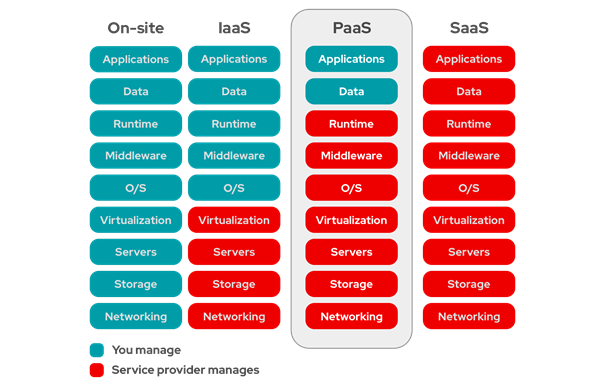

Az ERP az adott vállalatnál felmerülő valamennyi információfeldolgozást és az egész vállalatra kiterjedő integrációt megvalósító, egységes információs rendszer. Régebben egy vállalatnál mindegyik osztály „külön” életet élt, kevesebb volt az iteráció az egyes osztályok között, más volt a munkakörnyezet és más informatikai megoldásokat használtak. Egymástól működő rendszerek alakultak ki melyek a vállalat működésének egy-egy részterületét támogatták (gyártás, munkaügy, könyvelés stb.). Az ERP rendszer az egyes területeken keletkező adatok gyűjtését, tárolását, kezelését, feldolgozását és értelmezését teszi lehetővé összvállalati, vagy akár vállalatcsoporti szinteken is. Egy ERP szoftver nyomon követi a szervezet erőforrásait, mint például az emberi erőforrás, készletek, alapanyagokat, megrendeléseket, költségeket is. Megkönnyíti az információ áramlást a belső és akár a külső szereplők között. Első találkozásom az ERP rendszerekkel a vállal átirányítási rendszerek 1 során történt. Itt az alapokat sikerült elsajátítani. A gyakorlatokon a Microsoft NAV-val foglalkoztunk. A szakmai gyakorlatom során pedig egy régebbi SAP rendszerrel volt szerencsém találkozni, így betekintést nyerhettem egy multinacionális vállalat mögött álló ERP rendszer összetettségére és arra, hogy mekkora hatással bír egy ilyen rendszer, ez felkeltette az érdeklődésem a téma iránt és motivált az, hogy ezzel foglalkozzam az önálló labor tárgy, valamint később szagdolgozat szintjén is. A célom az önálló labor tárgy keretein belül, hogy a jelenlegi tudásom kibővítve új ismereteket szerezzek, amiket a jövőben is fel tudok használni, ezért is döntöttem a Microsoft Dynamics 365 mellett. Célom továbbá az, hogy megismerjem az AL programozási nyelvet és annak használatát. A Microsoft Dynamics 365 2016-ban jelent meg ez még a jelenlegi gyors iramot diktáló felhő alapú világban is fiatalnak számít tehát jelenleg is megéri ezzel foglalkozni. Eddigi tanulmányaim során rengeteg programozási nyelven ismerkedtem meg viszont még nem volt szerencsém ebben a programozási nyelvben dolgozni ez is egy új ismeret lesz a számomra. A végső cél egy olyan modul fejlesztése lenne, ami megkönnyít a visszáruk kezelését. A modulnak le kell tudnia szűkíteni a lehetséges visszárukat a megadott paraméterek alapján.
Az ERP szoftverek legjelentősebb előnye, hogy különálló, széttagolt, egyedi megoldások helyett egy egységes rendszerben kezeli a szervezet szinte összes folyamatát és egy adatbázisban tárolja a szervezet összes adatát. Az egyes szervezeti egységek működése ezáltal könnyebbé válik, valamint könnyebbé válik az is, hogy a folyamatokat hatékonyan nyomon kövessek. A vállalat gyorsabban fel tudja ismerni a változásokat, és segíti a döntéshozatalban.
Rengeteg nyílt forráskódú ERP rendszer létezik, amelyek nagy előnye, hogy nagyobb szabadságot biztosít a zárt fizetős ERP rendszerekkel szemben. A zárt fizetős rendszerek esetében a tulajdonos nem bocsátja rendelkezésre a forráskódot, ami miatt, ha valamilyen egyedi igény merül fel a rendszerrel kapcsolatban kénytelen a felhasználó fizetni érte. A nyílt forráskódú ERP rendszer esetén hozzá lehet férni a kódhoz, ami lehetőséget biztosít arra, hogy igény szerint módosítani lehet azt. A költség ilyenkor is egy fontos tényező a nyílt forráskódú ERP rendszerek és a fizetős zárt rendszerek között. A licenszelésnek nincs költésége és a felhasználó hozzáférést kap a forráskódhoz ingyenesen. Viszont van olyan szolgáltató, amelyik havidíjért cserébe nyújt szolgáltatásokat, mint például hosting, IT támogatás. A nyílt forráskódú ERP szoftverek főleg olyan növekvő vállalkozásnak lehet kedvező, amely limitált forrássokkal rendelkezik. Ezek a rendszerek nagyobb rugalmasságot biztosít a vállalatoknak, hogy kibővítsék vagy módosítsák akkor amikor szeretnék. Előnyök:
A legelterjedtebb nyílt forráskódú ERP rendszer az Odoo. Az Odoo többek között a következő modulokat tartalmazza: CRM (Customer-Relationship-Management, azaz ügyfélkapcsolat-kezelési rendszer), weboldal/e-kereskedelem, számlázás, pénzügyi számvitel, termelés, készletkezelés, projektkezelés, dokumentumkezelés. A közösségnek itt nagy szerepe van, rengetek fizetős, valamint szabad letölthető fejlesztés közül lehet válogatni.
A Metafresh egy másik népszerű nyílt forráskódú ERP rendszer főleg kis és közép vállalkozásoknak. Könnyen hostolható, a felhasználó által is. Az összes nagyobb operaciós rendszert támogatja, mint a Windows, Linux, IOS, Android. Olyan nyelveken érthető el, mint SQL, Java, XML vagy JavaScript.
A Buisness Central a Microsoft Dynamics NAV-ból fejlődött ki. Ez az ERP rendszer a világon piacvezető a kis és középvállalkozások között. A Navision ERP rendszer 1987-ben jelent meg, majd 1995 a Microsoft Windowsra is. A Microsoft 2002-ben zárta le a Navision megvásárlását, majd pár évvel később a nevét Microsoft Dynamics NAV-ra változtatta. A Microsoft Dynamics komplett üzleti csomagokat kínált. Ezzel lefedte a vállalati szükségleteket a Microsoft Dynamics AX révén. A kis és közép vállalkozásokat Microsoft Dynamics NAV-al, és az ügyfélkapcsolat-kezelést Microsoft Dynamics CRM-mel. 2008-ban lecserélték a két rétegű kliens-szerver felépítést és sokkal jobban skálázható és hatékonyabb a ma jól ismert három rétegű architektúrára. Az elkülönült az üzleti logikát a Windows Communication Framework-n keresztül a Microsoft Dynamics NAV Szerver fútatta. 2013-ban érte el az első nagyobb mérföldkövet a felhő szolgáltatások terén a Microsoft Dynamics NAV 2013 R2 megjelenésével. Az Infrastruktúra, mint szolgáltatás bevezetésével a Microsoft Azure Virtuális számítógépeivel, a Microsoft Dynamics NAV rendelkezésére álltak azok PowerShell scriptek amikel könnyedén lehet telepíteni és konfigurálni Microsoft Dynamics NAV-ot a virtuális számítógépeken. 2015 végén Microsoft Dynamics NAV 2016 volt az első verzió, aminél megjelent a havidíjas lehetőség, valamint az, hogy az egyedi fejlesztések modulokra bontása. Amivel nem kellett az alap kódba nyúlni. Ennél a verziónál jelentek meg a kiterjesztések. Ebben a verzióban jelent meg az eseménykezelés, ami annyit takar, hogy ha egy adott esemény bekövetkezik, akkor lefut annak az objektumnak a kódja, amelyre az esemény bekövetkezett. Microsoft Dynamics NAV-ot megvásárolható volt PaaS-ban a partnerek számára. Ez azt jelenti, hogy az applikáción kívül mindent a szolgáltató futtat és menedzsel. A következő nagy lépés a Microsoft Dynamics NAV esetében SaaS bevezetése volt.
A több vállalati kiszolgálás a kulcs technológia, ami a Microsoft Dynamics 365 Business Centralt rugalmassá és skálázhatóvá teszi. Lehetővé teszi, hogy könnyedén lehessen hozzáadni új ügyfeleket projektekhez. Így gyorsabban lehet frissítéseket publikálni, ezáltal csökkentve a leállást. Ebben a felépítésben a Business Central alkalmazás külön adatbázisokban van tárolva.

A Microsoft Dynamics NAV és a Microsoft Dynamics 365 Buisness Central hasonló tulajdonságokkal rendelkeznek. A különbség telepítésben van, a rendszer helyben fusson vagy pedig a felhőből?
Microsoft Dynamics NAV esetén szükség van a megfelelő hardverre és szoftverre, hogy garantálható legyen a megfelelő rendelkezésre állás. Szükséges még a megfelelő IT személyzet, hogy üzemeltesse, szükség esetén bővítse a hardver állományt és frissítse a szoftvereket. Microsoft esetében 5 éves ciklusokok vannak, tehát 5 évig támogatja a Microsoft az élettartamot. Microsoft Dynamics 365 Buisness Central esetében nincs külön költség a beüzemelés terén, a pay-as-you-go fizetéssel. Az ügyfél a vállalata igényei alapján kiválasztja, hogy milyen modulok kellenek számára. Nincs költsége a fenttartásnak, a Microsoft garantálja a megfelelő szoftvereket, a szinte folyamatos rendelkezésre állást.
A vállalatok, amik helyben tárolják az adatokat, teljes rálátásuk van a rendszerre az adatok olvasása, karbantartása értelmében. A helyi IT csapat felelős azért, hogy biztonságban legyenek azok az adatok. Folyamatos figyelni és fenn kell tartani az adatok biztonságát és védelmét. Ugyan ezek a szabályok érvényesek SaaS esetén is. Nincs más olyan szolgáltató, aki garantálni a magasabb szintű biztonsági eljárásokat, mint a Microsoft Cloud.
A Microsoft Dynamics NAV teljesítménye az implementálástól függ. Az ügyfélnek kell meghoznia a döntést, hogy milyen hardverekkel látja el a rendszerét, a költségeket figyelembe véve. Az ügyfélnek saját felelőssége, hogy a rendszer megfelelően és kellő gyorsasággal működjön, Microsoft Dynamics 365 Business Central esetén egy jól bejáratott rendszer kap az ügyfél. Microsoft Dynamics 365 Business Central magas szintű felügyelettel van ellátva, mint hardver, mint szoftver szinten. A Microsoft mérnökei gyorsan meg tudják oldani a teljesítménnyel kapcsolatban felmerülő problémákat, amennyiben a probléma forrása a Microsoft szolgáltatásával van.
A helyben telepített rendszereket úgy kell megtervezni, hogy azok ki tudják szolgálni a szezonális vagy a periodikusan megugró igényeket. Mivel a projectek rajtja több hónapot is igénybe vehet figyelembe kell venni, hogy addigra változhat az adatok mennyisége és minősége. Ezért a projekt felelőseinek változtatnia kell az alkalmazáson kód szinten, az infrastruktúrán hardveresen, Microsoft Dynamics 365 Business Central esetében rendelkezésre állnak a szükséges erőforrások és a Microsoft Azure Cloud folyamatosan figyeli a rendszer szükségleteit.
A Microsoft Dynamics NAV architecturával, a partnerek és az ügyfelek saját maguk irányítják és felügyelik az infrastruktúrát és az applikáció fejlesztéseit. Ők döntik el mit és mikor szeretnének fejleszteni. Egyértelmű, hogy ilyenkor a költségeket és az erőforrásokat a partnereknek és az ügyfeleknek kell biztosítani. A Microsoft Dynamics 365 Buinsiess Central estében a partnerek, ügyfelek nagyrészben a saját napi feladatiakkal tudnak foglalkozni. A hardveres és szoftveres fejlesztések periodikusan történnek, átláthatóan és szinte leállások nélkül SAAS esetén.
A C/SIDE egy fejlesztői környeztet a saját üzemeltetésű Buisness Centeral és Microsoft Dynamics NAV-hoz, ami a Navision kliens szoftverjébe van integrálva. Buisness Central esetében a C/SIDE 14. verzióig volt támogatott. A C/SIDE a Client/Server Integrated Development Environment rövidítése. A C/SIDE a NAV első verziójához készült, hozzáférést biztosít az összes NAV objektumhoz, és az alkalmazás teljes egészét személyre szabható vele. A C/SIDE a C/AL-al együtt fejlődött és folyamatosan került bele az új funkciók. A Microsoft Dynamics NAV-és a C/SIDE-on belül teljesen megváltoztathatóak a rendszer alapfunkciói. Ez az nagyon nagy előny egy nagyon nagy hátránnyal is jár mivel ezt nehéz folyamatosan üzemeltetni évekkel később. Emiatt az újabb verziókra való átállás időigényesebb és költségesebb. C/SIDE előnyei:
A Visual Studio Code egy integrált fejlesztő környezet, amit a Microsoft hozott készített Windows, Linux és MacOS operációs rendszerekre. A Visual Studio Code olyan funkciók találhatóak meg mint, debugolás, szintakszis kiemelés, refactoring és beágyazott Git. A Microsoft, megosztotta a Visual Studio Code kódjának a nagyrészétét GitHub-on. A Visual Studio Code 2015-ben jelent meg MIT licensz alatt. A Visual Studio Code rengetek fajta programozási nyelvet használhatunk, mint például, Java, JavaScript, Go, Node.js, Python, C/AL, vagy éppen a C++. A Visual Stuido Code-hoz rengeteg bővítmény tartozik. Ahhoz, hogy Buisness Central-ban fejleszteni lehessen szükség van bővítményre. Míg a C/SIDE a helyben futtatott rendszerekre van kihegyezve, a VS Code a web és a felhő alapú applikációk fejlesztése miatt jött létre. A VS Code-ban való kódolás egyszerű, gyors és hatékony. Nincs grafikus interfész, hogy megjelenítsen metaadatokat mint a C/SIDE esetében. Projektek helyett mappák és fájlok vannak. Támogatja a verziókezelést, ami hatalmas előny a C/SIDE-al szemben.
A nyelv, amit a Buisness Central használ az a C/AL (Client/server Application Language). A C/AL szintakszisa hasonló a Pascalé-hoz. A C/AL egy robosztus programozási nyelv, ami arra lett tervezve, hogy személyre szabható és kibővíthető legyen az ERP alkalmazás. A nyelvet csak a Microsoft Dynamics NAV-ban használjuk. A C/AL nyelv nem tekinthető objektum orientált nyelvnek, csak az előredefiniált objektumokat használja:
Az Application programozási nyelv, amivel a Microsoft Dynamics 365 Business Centralt fejleszthetjük. Az AL segítségével kezelhetjük az adatokat, függvények segítségével olvashatóak, írhatóak az adatok a Buisness Central adatbázisában. Az AL segítségével ráhatásunk van az objektumok megvalósítására és a felhasználóval való interakciókra. Az AL-nek rengeteg előre definiált függvénye van, amiket fel lehet használni a fejlesztés során, illetve írhatunk saját magunk is egyedi függvényeket. Az AL-ben lehetnek esemény triggerek és függvény triggerek. Minden objektumnak (Table, Page, CodeUnit, Report, stb) van esemény vezérelt triggere, ezeknek a neve On-nal kezdődik. Ezek akkor futnak le, ha egy esemény megtörténik, ilyen esemény például a törlés, módosítás, létrehozás. Az események száma függ az objektum típusától. Létrehozhatunk saját függvényeket az objektumokhoz, ezek elérhetőek lesznek az objektumok függvény triggerei által-Ezek a metódusok. Mint sok más programozási nyelvben, AL-ben is felvehetünk változókat, amiket használni lehet a függvényekben, vagy átmenetileg adatokat is lehet bennük tárolni.
Ha egy vásárló vissza szeretne küldeni egy terméket vagy szeretné, ha megtérítenék az árát a terméknek, amit eladtunk neki és megkaptuk érte az összeget, akkor létre kell egy eladás jóváírást, amiben specifikáljuk a kért változtatásokat a rendeléssel kapcsolatban Ahhoz, hogy a megfelelő adatokkal hozzuk létre kétféle lehetőségünk van létrehozni. Létrehozható közvetlenül az elküldött termék számlájáról, vagy pedig a számla adatainak a másolatáról. A visszaküldés vagy visszatérítés lehetséges, hogy csak néhány termékre vonatkozik nem pedig mindenre, ami a számlán szerepel. Ebben az esetben szerkeszteni kell ezeket az információkat a eladás jóváírás vagy pedig a visszaáru rendelés esetében. Amikor létrehozzuk ezeket, lehetőség nyílik arra, hogy visszaadjuk a vásárlónak a pénzét. Ahogy már említve volt lehetőség van arra, hogy a visszáru nyugtáit kombináljuk, ez akkor lehetséges, ha a vásárló több terméket küld vissza különböző visszaáru rendelésből. Amikor visszaérkeznek a termékek a raktárunkba, megjelöljük azokat a visszaáru rendeléseket megérkezettként, ez pedig létrehozza a visszáru nyugtát. Amikor készen állunk, hogy számlázzunk a vásárlónak ahelyett, hogy minden visszaáru rendelés egyesével számláznánk, létrehozható egy eladás jóváírás és automatikusan másolja létrehozott nyugták sorait a dokumentumba.
Kompenzálhatjuk a vásárlónkat, ha a terméket sérülten, kifogásolhatóállapotban vagy esetleg késve kapta meg.
Amennyiben nagyobb ellenőrzésre van szükség a visszáru folyamatáról, ide tartozik például a raktári dokumentumok, de olyan is előfordulhat, hogy több visszaárut kapunk több dokumentummal ugyan arról a helyről. A visszaáru rendelést segítségével tudjuk kezelni ezeket a problémákat, valamint a termék cseréjét, ha szükséges.
Lehet cserés rendelés, visszafizetéses rendelés, amik felmerülnek a visszáru folyamatában. Lehetőség van kezelni azokat a termékeket, amikre a forgalmazó garanciát vállal.
A cél az volt, hogy egy olyan felületet, hozzak létre, ahol ki lehet listázni azokat a teljesített vásárlásokat, amelyeket adott esetben visszáruként tudunk kezelni. Ehhez először is létre kellett hoznom egy táblát, amiben azokat az adatokat tárolom amiket megszeretnék jeleníteni a keresés folyamán. Lesz egy elsődleges kulcs. Nagyon fontos tudni a rendelési számot mivel, ez az egyik elsődleges információ, amivel egy rendelést azonosítani tudunk. Fontos a megrendelő neve is, valamint a neve mellett az azonosító is. Maga termékről is szeretnénk információt ezért a tábla részét képezi a termék azonosítója, neve, és az, hogy hány darabot rendelt a vasasról az adott termékből. Kell még rendelés dátuma, és a termék főkönyvi száma. Az utolsó adat pedig az lesz, amiben megadhatjuk, hogy hány darab terméket szeretne a vásárló visszaküldeni.
A felhasználói felületen található két mező, amelyek segítségével tudunk szűrni a vásárlások között. A Customer Name mezőben a vásárló nevére tudunk szűrni, nem szükséges a teljes nevet beírni már névrészletre is lehetőség van szűrni. A Customer No. mezőben pedig értelemszerűen a vásárló azonosítójára lehet szűrni. Az eredmények egy táblázatban jelennek meg mezők alatt. Itt a tábla pont alatt felsorolt információk jelennek meg. Újra szeretnénk szűrni akkor a Delete-re kattintva kiürül a lenti lista és lehet megint szűrni. Maga a Page egy Worksheet, és egy temporális táblát használ.
Megnyomva az enter vagy pedig a Find-ra kattintva lehet szűrni. A Page átadja a szűrési mezők tartalmát a függvények, valamint a temporális táblát. 4 másik táblát veszek még igénybe, hogy a fontosabb adatokat ki tudjam nyerni. A SalesShipmentHeader, SalesShipmentLine, ItemLedgerEntry, Item táblát. Ezeken kívül még egy Integer változó is kellett, amivel a sorok számát tudom megadni a temporális táblában.
Annak függvényében, hogy mi alapján szűrűnk, többfelé ágazhat el a függvény. Ha a vásárló nevére keresünk rá akkor először a SalesShipmentHeader táblában kezd el keresni, hogy van-e olyan nevű vásárló, mint amire szűrni szeretnénk. Ez úgy néz ki, hogy kisbetűssé alakítja a keresési feltételt, a SalesShipmentHeader táblában is az éppen vizsgált vásárló nevét is. Majd a Cointans függvénnyel összeveti. Ha talált akkor SalesShipmentHeader táblán szűr a feltétellel. Ezután végig az imént említett táblán és a SalesShipmentLine táblát a Document No. kapcsolja össze a SalesShipmentHeader táblával. A következő, hogy a SHL táblán is végig megy a függvény. Itt az ItemLedgerEntry táblát szűkítjük a „Sale” típusokra. Ezután megint szűkít „Sales Shipment” -re, azért, mert csak azokra a termékekre vagyunk kíváncsiak, amik már a vásárlónál vannak hiszen csak azokat tudjuk visszáruzni. ITE össze kell még kapcsolni a SHL táblának a Document No.-val és a Line No.-val. Ezek után az ITE táblán végig haladva elkezdi feltölteni a temporális táblát a ciklus.
Mivel számomra javarészt ismeretlen terület volt a BC és a AL nyelv ezért azzal kezdtem, azzal kezdődött, hogy megnéztem jó pár anyagot a Dynamics 365 Business Central-al kapcsolatban [8]. Próbáltam megismerkedni a nyelvel és a környezettel. VS Code-ban installáltam az Extension Packot. Könnyedén ment az authentikáció a VS és a Dynamics 365 között. Miután minden összeállt és a VS Code által kreált kis „app” lefutott neki tudtam állni a feladatnak. Elkezdtem össze gyűjteni azokat az információkat amire szükség van egy visszárunál, majd ezek alapján összegyűjtöttem azokat a táblákat, amikre szükségem lehet. Megnéztem a Page Inspection segítségével, hogy a BC milyen táblákat használ, egy adott Page-en innen ez sok esetben segített. Az Item Ledger Entry-ből indultam ki, azokat az adatokat, amikre szükségem lehet megnéztem, hogy tudnám összekapcsolni az Item Ledger Entry-vel. Ehhez találtam, egy nagyon hasznos táblázatot [7] ahol megtaláltam azt, hogy mit mivel kell összekapcsolni. Amikor elkezdtem létrehozni a saját táblámat akkor, gyakran ránéztem BC alap tábláira, hogy megértsem azt, hogy hogyan épül fel egy tábla. Ugyan ezt volt, amikor a saját Page-em felépítésénél akadtam el. Próbáltam olyan alap Page-et keresni, ami hasónló ahhoz, amit én szeretnék létrehozni. Ami nehézséget okozott, hogy míg a korábbi programozási nyelvek esetében jóval nagyobb community foglalkozik ezáltal egy adott hibára, problémára több megoldás lehet találni a fórumokon, amíg AL esetében jóval kisebb a community, így jobban kell a Microsoft dokumentációjára hagyatkozni, ami nem feltétlenül egy rossz dolog, mert még inkább arra ösztönöz, hogy jobban megértsem az adott problémát. A debugolás nem okozott különösebb nehézséget, mind a VS Code mind a BC 365 kiválóan működött ezen a téren. Én személy szerint akkor kezdtem el megérteni programozási nyelv sajátosságait és magának a BC a felépítését amint elkezdtem vele dolgozni és megérteni azt, hogy az adott részt miért úgy kell megírni ahogy. A célom mindenképpen az lenne, hogy a jövőben ezt továbbfejlesszem, valamint tovább bővítsem az a félév során megszerzett ismereteket. További mezőkkel lehetne kibővíteni a szűrési feltételeket, hogy minél több információ alapján ki lehessen szűrni a visszárukat. A szűrés által kapott listába további információkat is be lehetne tölteni, mint pl. a garancia időtartama stb. Létre lehetne hozni egy új felületet, ahol azt lehet megadni, hogy milyen okból lenne a visszáru, elállas, hibás termék, szállítás során sérült stb. Ami még mindenképpen szükséges lenne a jövőben az, hogy automatikusan kitöltse nekünk a modul a Sales Return Order oldalon található mezőket, ezáltal nagyságrendekkel megkönnyítve a munkát. Ezek mind olyan funkciók, amiket következő félévben a Szakdolgozat keretein belül meg lehet valósítani.